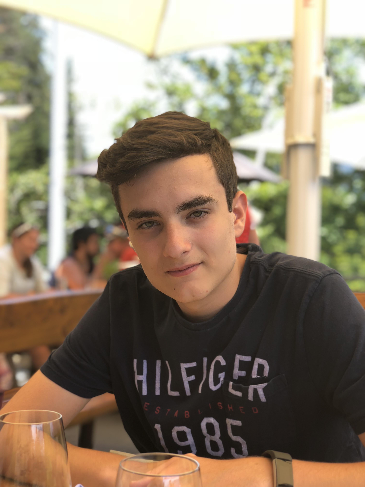

Pedro Martins Silva de Castro | WDD 130
Hello, my name is Pedro Castro, and I'm a 21-year-old passionate about the world of technology. Currently, I'm pursuing a degree in Software Development, a field that not only challenges me but also fuels my hobby—programming. When I'm not coding or diving into the latest tech trends, you can find me enjoying my favorite food, sushi, which is a testament to my love for trying different cuisines and embracing diverse cultures. But beyond my academic and personal interests, there's something even more exciting on the horizon. This August, I'm getting married to my incredible girlfriend of four years. It's a significant milestone that symbolizes not just our love but also the start of a new chapter in our lives. I'm eager to embark on this journey, bringing the same passion and commitment that I apply to my studies and hobbies. In essence, I'm someone who's deeply invested in my personal and professional growth, cherishing the connections I make along the way. Whether it's through developing innovative software solutions or building lifelong relationships, I'm always looking forward to the next challenge and opportunity.